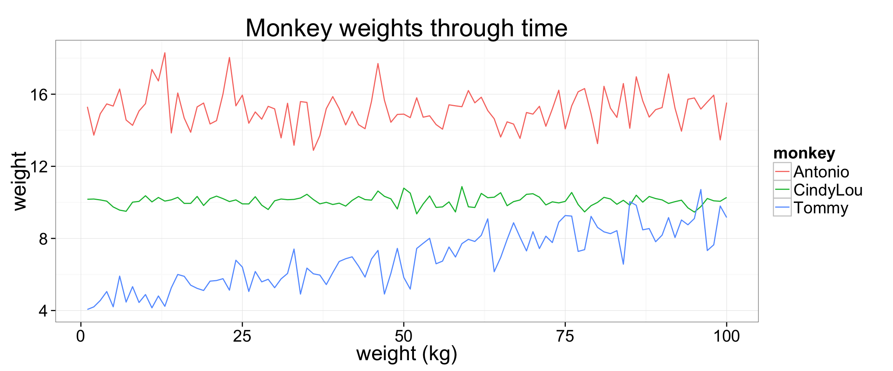

To briefly summarize: in ggplot2 a plot is thought of as having several parts which are either background elements or individual layer elements.
ggplot() function to set up your plotting window (mapping data to aesthetics using the aes() function)aes() to map columns to aesthetics. Things you can set include
aes()facet_grid() or facet_wrap() to add faceting formula.geom_xxx() functions. For a full list of the possibilities try ??geom The most common are
geom_point()geom_histogram()geom_bar()geom_path()geom_rect()geom_polygon()geom_abline()geom_hline() and geom_vline()annotate() your plottheme_classic(20)theme_bw(20)labs(x="The X axis label", title="my nice little graph")guides() to tweak legendscale_x_continuous(limits=c(0,10)) to customize x scalescale_fill_xxx() and scale_color_xxx() for customizing color choicesggsave()Lets create the below plot of log(body mass) boxplots for different activity patterns. We need all the variables in a single dataframe, with X and Y in separate columns, and any variables to be used for aesthetics in parallel columns. The shortPantheria dataframe is already in a good shape for this.
facet_wrap().[histograms][1]
qplot(), plot the relationship between homerange size and body mass, with different colors for activity pattern, with a regression line, with the equation for this line as text on the plot, with a title, and with a legend. The plot should look like this.[scatter][2]
the geom_path() function is really useful for plotting line graphs. Let us simulate data of monkey weights through time. We will simulate weight data for three different monkeys, that were trapped 100 times and weighed each time. Then we can use paths to plot their weight through time.
library(ggplot2)
set.seed(501)
df <- data.frame(
trappingEvent=rep(1:100,3),
monkey=rep(c("CindyLou","Tommy","Antonio"),each=100),
weight = c(rnorm(100,10,.3),rnorm(100,9)*seq(from=.505,to=1,by=.005),rnorm(100,15))
)
monkeyweights <- ggplot(data=df,aes(x=trappingEvent,y=weight,color=monkey)) + geom_path() + theme_bw(20) + labs(title="Monkey weights through time", x="weight (kg)")
monkeyweights